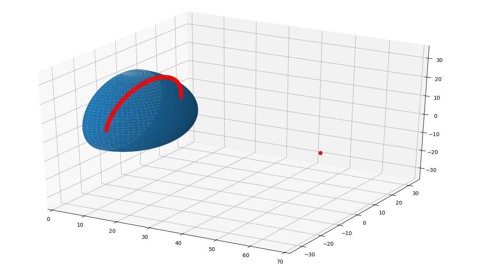

obscura_tools package¶
Submodules¶
obscura_tools.radome_obscura module¶
@author: Boxx
-
obscura_tools.radome_obscura.radome(distance, height, radius, azCorrection, filename=None, threshold=5, resolution=360)[source]¶ Create azimuth and elevations for radome obscura
Creates azimuth and elevation arrays for a radome obscura defined by distance, height, radius, azCorrection. Accepts a filename for csv storage. Does not save file if none is given. Optional tuning parameters are threshold, and resolution.
- Args:
- distance (double): the distance from the transmitter to the
- radome center in meters
- height (double): the height difference between center of beam
- and radome center in meters (value is negative if radome center is above center of beam)
radius (double): radius of the obscura radome in meters azCorrection (int): azimuth correction in degrees
- Kwargs:
filename (string): filename to store array threshold (int): error correction threshold. default = 5 resolution (int): determines the number of points in the meshgrid as
res^2. default = 360plot (bool): set to true to plot radome meshgrid. default = False
- Returns:
- python dictionary containing azimuths array, elevations array and points array
- Example:
- Find the obscura azimuth and elevations vectors for a 20 meter radius radome that is 60 meters away from the radiating source and has a center 6 meters above it. The azimuth correction is 300 degrees.
>>> import obscura_tools.radome_obscura as obscura >>> import pandas as pd >>> ans = obscura.radome(60, -6, 20, 300) >>> table = pd.DataFrame({'azimuths': ans['azimuths'], 'elevations': ans['elevations']}) >>> table.head()
<index> azimuths elevations 0 281 9.028552 1 282 12.343207 2 283 14.459659 3 284 16.107143 4 285 17.472889 Use the points key to plot a 3D representation of the obscura.>>> import matplotlib.pyplot as plt >>> from matplotlib import cm >>> from mpl_toolkits.mplot3d.axes3d import get_test_data >>> from mpl_toolkits.mplot3d import Axes3D # noqa: F401 unused import
>>> point = ans['points'] >>> # numpy variables >>> pi = np.pi >>> sin = np.sin >>> cos = np.cos
>>> # variable simplifications >>> R = radius >>> N = 360
>>> theta = np.linspace(0, pi, N) >>> phi = np.linspace(-pi / 2, pi / 2, N) >>> theta, phi = np.meshgrid(theta, phi) >>> X = R * sin(theta) * cos(phi) >>> Y = R * sin(theta) * sin(phi) >>> Z = R * cos(theta)
>>> fig = plt.figure() >>> ax = fig.gca(projection='3d') >>> surf = ax.plot_surface(X, Y, Z) #, rstride=1, cstride=1, cmap=cm.coolwarm, # linewidth=0, antialiased=False)
>>> points = pd.DataFrame.from_dict(point, orient='index') >>> ax.scatter3D(points[0], points[1], points[2], c='red', linewidth=3)
>>> x0 = points[0][0] >>> if x0 > 2 * R: >>> upp = np.ceil(x0 + 10) >>> if upp % 2: >>> upp += 1 >>> ax.set_xlim([0, upp]) >>> ax.set_ylim([-upp/2, upp/2]) >>> ax.set_zlim([-upp/2, upp/2])
>>> plt.show()
Module contents¶
Top-level package for obscura-tools.